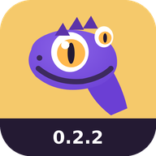
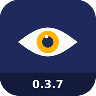
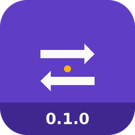
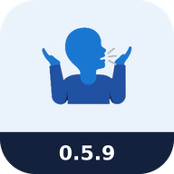
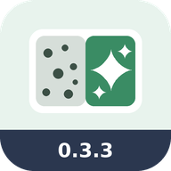
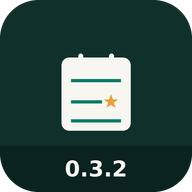

kaji web examples
Pages, demos and examples we made. Links checked 2026-11-21 11:51 WIB. Proposals and simulations are labeled as such. Numbered app icons identify the linked Android build, not a web version. Web-only projects use category symbols where no project icon exists.
Maps
tuju
Route map plus selected-stop journey timer and optional on-device GPS distance. GPS is off by default, asks location access when enabled, and stops when the screen is left. Comparison uses operator GTFS timetable minutes and straight-line stop distances, not road distance or live travel times. Uncovered figures stay unavailable. Browser UI/timer checks passed; real-ride GPS and physical phone unproven. Browser and Android state remain separate. Official IDSW access guide is now on the web page and top map, with a labeled LRT marker, final walk and Sunday Car Free Day warning. Latest map layout correction is published. Android 0.2.2 is an undelivered intermediate build; complete 0.2.3 is still being built and qualified. The linked 0.2.1 remains the last delivered APK.
Learning by practice

sanggup
25-path skills practice prototype. Home now uses a house icon, also included in signed Android0.2.2. Browser and APK progress stay separate. Older synthetic demo0.2.0-to0.2.1 retention proof does not establish a phone or0.2.2 upgrade.
Animation and cooking
animate
Code-drawn canvases rendered to MP4: the original Grow video and a render of the upstream History of AI example.
cook
Parallel-thread recipe tables with adjustable portions and options. Not kitchen-tested; food-safety notes are on each page.
Indomie recipe box
The main interactive Indomie page, based on the 500 ml card.
Indomie engineer's spec
Kept as its own version; it is not reconciled with the recipe box. Photo credit is on the page.
nada
Deterministic recipe-to-MIDI generator. The Android test release is linked from the web app; physical-phone behavior remains unverified.
Charts and concepts
Synthetic break-even charts
Cash vs economic break-even with made-up sales numbers.
Apps, prototypes and simulations

tengok
MIDI playback, piano roll and play-along game; browser-decoded images/audio, text and hex/details. Simple synth approximates instruments and omits pitch bends. PDF/video/SVG/office/archive rich viewers remain parked; files stay in this tab. Conversion work is separate and evolving, not a blanket format promise. Long MIDI piano rolls now scale to stay within browser canvas limits; synthetic six-minute6400-note render passed, physical cantina2 retest pending. Built-in sample links selectable, local files show no shareable URL/no upload. Android tap candidate remains unconfirmed on phone. Each sample picker now has its own selectable URL and remains visible after local-file selection; no local file payload or restoration in those links.
tindak tasks
Create, edit, complete, archive and restore tasks with lists and date labels. JSON backup and copy-only import. Separate from Android: no phone sync or timed alerts. Clearing browser data can erase tasks; backups contain unencrypted task text. Existing review prototypes remain available. Actual Tindak root serves this app directly, not a redirect. Fresh Tindak browser storage identity, unused old state intentionally not migrated.
tindak review prototype
Original review content retained at its own route under the actual Tindak project. Fresh browser storage identity as requested, unused old state intentionally not migrated. Separate from task homepage and code canvas, not Android sync.
Shared-list simulation
A simulation, not the live app. Android task app linked separately; this is a review prototype or historical simulation, not a synced task web app.
tindak code review
Distinct source-review canvas retained. Fresh Tindak browser-local camera/marks namespace as requested, unused old state intentionally not migrated. Not a synced task app.
menit manual web companion
Enter daily minutes yourself from Digital Wellbeing. Separates listed AI apps from apps that may include AI; no automatic phone usage measurement. Data stays in this browser, with plain JSON backup/import. No Android data sync.
Kokok open-tab web companion
Plan local alarms and use test sound/snooze only while this browser tab stays open and awake. Not a reliable wake-up alarm. Closing, pausing or muting the tab can prevent ringing. Plain JSON export is reference only, not the encrypted Kokok feed. No phone alarms or feed are changed.
tagih web
Existing invoice UI published as a browser-local counterpart, not a rewrite. Uses browser storage separate from Android. Synthetic invoice validation passed; no real customer/payment data used. No automatic Android sync, payment collection or account connection.

Sambung web
Existing shared-skill/work brief UI published as a browser-local counterpart. Synthetic brief validation passed, not all flows checked. Data stays in this browser, separate from Android; no automatic sync, external provider connection or account changes.
Cabang web viewer
Explore fictional Demo threads or open a Cabang JSON export locally. Guessed thread branches may be wrong. Static browser viewer only: no live DeltaChat account access, sending, or sync. File contents are not uploaded. Android is a separate build.

Sapa web counter
Browser-local people/raised-hand counter with local photo check, manual correction, timed rounds and random pick. First model/runtime load about28MB. A clear raised-hand photo passed; a backlit crowd test failed, so do not rely on it for accurate room counts or voting. Phone/live-room behavior unverified. No frame upload or online AI, Android Jev features not included. AGPL model/app and MIT runtime notices linked.

Kemas browser comparison
Pick before/after photos of the same spot. Local changed-pixel display and recognizable object counts, no cleanliness judgment.4.6MB model download; photos stay in browser. Android retains ghost overlay/home-screen widget. Photo fixtures passed; physical-phone camera and speed unverified. App/model AGPL-3.0 and runtime notices included.
Onda browser lab
Local object detection, pose estimation, classification, browser sensors and English speech to text. Speech model downloads on demand (~41MB), audio capped30seconds, no upload. Desktop file/fake-microphone tests passed with transcription errors; physical microphone/sensors/camera/speed untested. Converted onnx-community speech model has no own license; differing upstream permissive declarations documented, not legal certainty. Android remains fuller sensor support.
denyut
Deployed Python-core commands, notes retention and a tab-awake reminder. Browser-local data stays separate from Android. Not a freeform model or a reliable background/locked-phone reminder. Phone performance remains unverified. Separate Android widget due-time tests currently fail, including before this browser addition; browser success does not qualify Android.
bidik
Separate browser JavaScript loop/GIF maker with local video selection, candidates, trim, preview and export. Videos are not uploaded. Synthetic WebM and H.264 MP4 desktop Chrome fixtures passed; phone recordings, HEVC, variable frame rate, large files and phone performance remain untested. Not proof of Android loop/GIF correctness. No browser screen recording.
unggun
Check public GitHub releases and APK links using a browser-local project list. Does not install Android apps or share the Android project list. Phone installation and Android behavior remain separate.
unggah
Compare a local ZIP with a public GitHub repository. Deployed synthetic comparison checked. GitHub sign-in and relay are absent, real writes are disabled, and no upload or commit is made. Browser capability is separate from Android.
saku
Standalone KDBX development preview, not audited. Fake data only, no real passwords. Fake KeePassXC2.7.12 KDBX4 AES/Argon2d64MiB and KDBX3.1 open/edit/save/reopen checked. A handwritten ending check rejects tested corruption, but has no independent security review.25 synthetic fixture checks and manual KeePassXC comparison are not automated oracle integration. No upload, browser persistence or sync; phone performance and shared Android-file compatibility remain unverified.

simak
Web cache repair delivered 21 Nov 11:40. Returning clients now upgrade the old offline cache and load the current agenda, including the official Day 1 17:05 panel. A warm cloud-browser test with synthetic saved state preserved a legacy whole-block note and Registration star. Physical-phone web confirmation remains pending. No contacts access in this web companion. Linked Android 0.3.2 is published but its emulator qualification has not passed; it is not yet delivered as a qualified APK.
Research and proposals
kapan
Compact upcoming developer-event list with city chips, Jakarta/Jogja routes, ICS and organizer-sourced poster thumbnails. Tap a thumbnail for the full poster or the card for its event page. List-only phone layout retained. Refreshes about every six hours; sources and posters are best effort. Live Samsung browser not verified.
irvan
A browsable project map and reviewed introduction, with both paper credits and links. Website and signed Android0.1.0 released; not phone-tested.
tumbuh
Workshop and economics proposals. The linked Android commitments app is separate from these planning drafts; no live business offer.